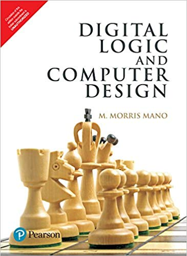
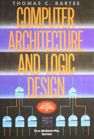
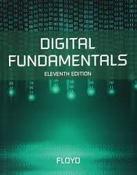

| Digital Logic and Computer Design | ||
|---|---|---|
| Author: | M.M.Mano |  |
| Publisher: | PHI | |
| Edition: | 4th Edition | |
| E-Book: | Download E-Book | |
| Computer Architecture and Logic Design | ||
|---|---|---|
| Author: | T.C.Bartee |  |
| Publisher: | McGraw Hill | |
| E-Book: | Download E-Book | |
| Digital Fundamentals | ||
|---|---|---|
| Author: | V.Vijayendran, Vijay Nicole |  |
| Publisher: | TMH | |
| Edition: | 11th edition | |
| E-Book: | Download E-Book | |